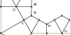

| We will construct a figure based on a hexagon. |
| Draw the construction lines lightly because they will be erasedas the drawing progresses. |
| First, construct a hexagon and draw perpendicular bisectors of its sides. | |
| Next we construct a kite similar to those making up the hexagon. | |
| Now we construct three kites congruent to the smaller one. | |
| Repeating this process, here is the second stage of the construction. | |
| Here we build the first kite of the third stage. | |
| Now build three more kites congruent to this kite. | |
| Repeat this process for another kite. | |
| Next, fill in the gap that appears. |  |
| Continuing in this fashion we get the third stage. | |
| Here is Robert Fathauer's drawing with many stages completed. |
Return to Tilings with Fractal Perimeters.